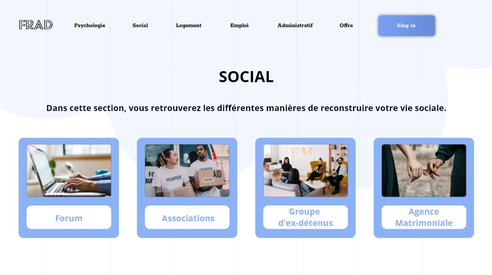

In this group project, our goal was to think about a website that would change the reintegration of ex-prisoners.
A website gathering all the administrative steps to be taken when leaving prison, as well as many ways to find a social and professional life.
Not knowing the computer skills of our targets, we opted for the most intuitive layout possible.
